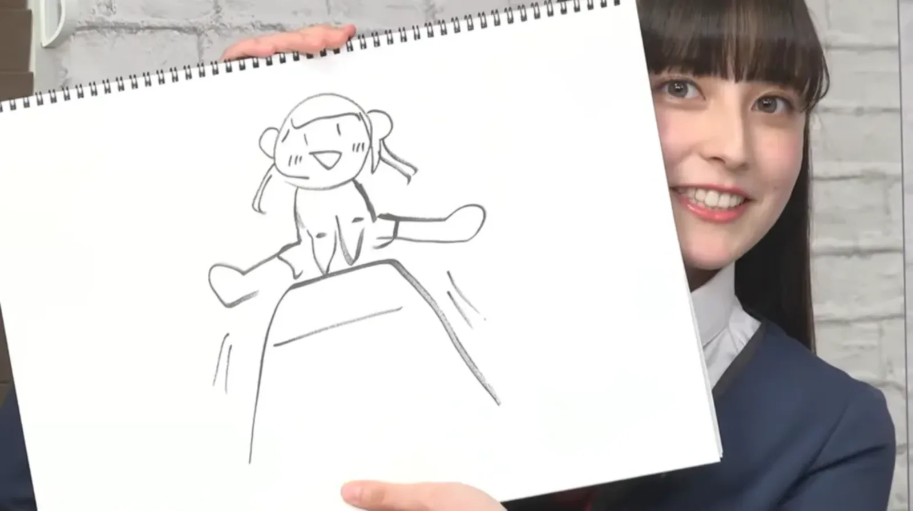

| Musician | Base Ball Bear · CHEMISTRY · Cody・Lee(李) · DJ OZMA · iri · krage · LiSA · milet · OKAMOTO'S · PUFFY · UNICORN · UNISON SQUARE GARDEN · 나나오아카리 · 니시노 카나 · 도쿄 스카 파라다이스 오케스트라 · 마고코로 브라더스 · 무라시타 코조 † · 사카구치 아미 · 삼보마스터 · 아다치 카나 · 야기 카이리 · 여왕벌 · 오카자키 타이이쿠 · 오쿠다 타미오 · 키무라 카에라 · 키시단 · 후지패브릭 |
|---|---|
| Actor | 나가세 리코 · 나리타 료 · 니카이도 후미 · 마시마 유 · 모리 나나 · 모리타 미사토 · 사쿠라이 카이토 · 와타나베 다이치 · 츠치야 타오 · 쿠라 유키 · 쿠라시나 카나 · 쿠로시마 유이나 · 타카다 리호 · 타케다 리나 · 히라이 아몬 |
| Voice actor | 스케가와 마구라 · 야노 히나키 · 이나미 안쥬 · 쿠스노키 토모리 · 토야 키쿠노스케 · 페이튼 나오미 |
| Comedian | 바이킹 |
일본의 성우.
2017년 10월부터 2019년 12월까지 아이돌 그룹 아이돌ING!!!의 멤버로 활동하였다.
2020년 Sony Music Artists가 진행하는 게임 및 CD 릴리스 신세대 성우 히로인 프로젝트 「BATON=RELAY」의 타카하시 쿄코 역을 배정받았다. '성우 히로인 프로젝트'라는 타이틀 그대로 성우들을 전면에 내세우는 컨셉의 프로젝트였으나, 코로나바이러스감염증-19의 여파로 인하여 오프라인 이벤트는 물론 레코딩도 어려워지면서 2020년 3월 22일에 게임은 어떻게든 발매되었으나 업데이트와 프로젝트 진행 자체가 잠정 중단되고 만다. 그리고 결국 시동한 지 4개월만인 2020년 7월 30일 게임 서비스와 프로젝트 모두 종료되면서 더 이상 해당 프로젝트에서 활동하지 못하게 되었다.1

효빈교통공사 관련 작품 등에서 키토 아카리(라세나 역)와의 동반 출연작은 "🌈" 이모지를 별도 표시합니다.
미국 혼혈이다. NHK Songs Of Tokyo에서 아버지가 미국인9이라고 밝혔다. 어머니는 교토 출신의 일본인이다. 트위터에서 밝힌 바로는 간단한 영어회화를 할 줄 아는 듯하며, 리에라지에서 영어 실력을 보여주기도 했다. 일본은 1985년 이후 출생자의 복수국적을 허용하지 않으며, 출생에 의한 복수국적10은 22세까지만 허용하기에, 일본 국적을 택한 듯하다.
혼혈이어서 어린 시절부터 차별을 받았던 것으로 보이며, 현재도 트위터나 인스타그램에서 종종 단지 혼혈이라는 이유로 사이버 불링을 받고 있다. 전소미, 낸시, 한현민, 휴닝카이, 문샤넬 등 혼혈 연예인들이 일상이 된 한국과는 달리, 일본은 여전히 혼혈에 대해 열린 시각을 가진 나라는 아니다. 당장 같은 러브라이브 성우의 서양계 혼혈도 아닌 한국 혼혈 Pile도 혐한 세력들에게 차별 발언들을 많이 받았고, 파이루즈 아이는 아예 오디션에서도 받아주지 않아 2019년에 늦게 데뷔했다.11
본인의 인스타그램에 자신은 3/4가 아니고 하프가 맞으며, 차별하지 말아 달라는 글을 올리기도 하였으나 그럼에도 차별 글들을 올리는 일본인들이 많은 듯 보여 안타까움을 자아냈다.